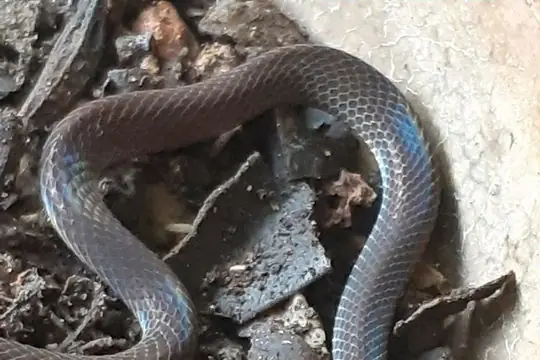
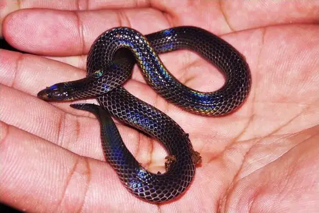
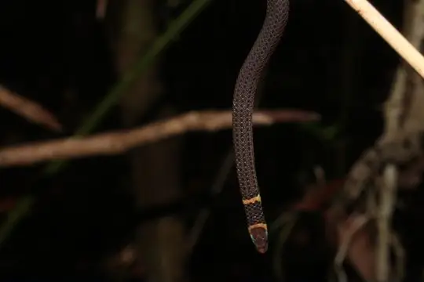

Pseudorabdion
The genus Pseudorabdion (family Colubridae) has 15 species in SnakeList (none venomous), recorded in 4 countries.
- 15species
- 15non-venomous
- 4countries
About the genus
A genus of the family Colubridae (colubrids).
Species
Showing 15 species
 Common Collared SnakePseudorabdion collaris
Common Collared SnakePseudorabdion collaris
Dwarf Reed SnakePseudorabdion longiceps- No photo yetEiselt's Dwarf Reed SnakePseudorabdion eiselti

Günther's Dwarf Reed SnakePseudorabdion oxycephalum- No photo yetMcnamara's Burrowing SnakePseudorabdion mcnamarae
- No photo yetModigliani's Dwarf Reed SnakePseudorabdion modiglianii
- No photo yetMountain Burrowing SnakePseudorabdion montanum
- No photo yetPanay Island Reed SnakePseudorabdion talonuran
- No photo yetSarasin's Reed SnakePseudorabdion sarasinorum
- No photo yetSarawak Reed SnakePseudorabdion saravacense
- No photo yetSirambé dwarf reed snakePseudorabdion sirambense
- No photo yetTaylor's Burrowing SnakePseudorabdion taylori
 White-collared Reed SnakePseudorabdion albonuchalis
White-collared Reed SnakePseudorabdion albonuchalis
Zamboanga Burrowing SnakePseudorabdion ater- No photo yetPseudorabdion torquatum
No snakes in Pseudorabdion match.
About the genus Pseudorabdion
- Family: Colubridae.
- Recorded in: Brunei, Indonesia, Malaysia, Philippines.